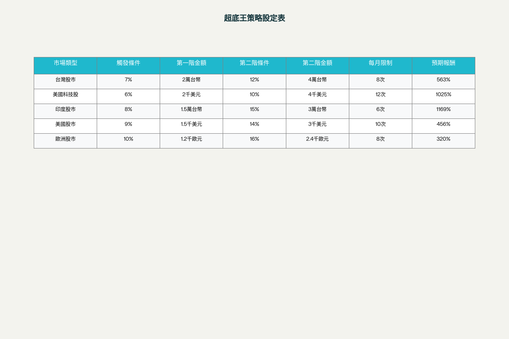
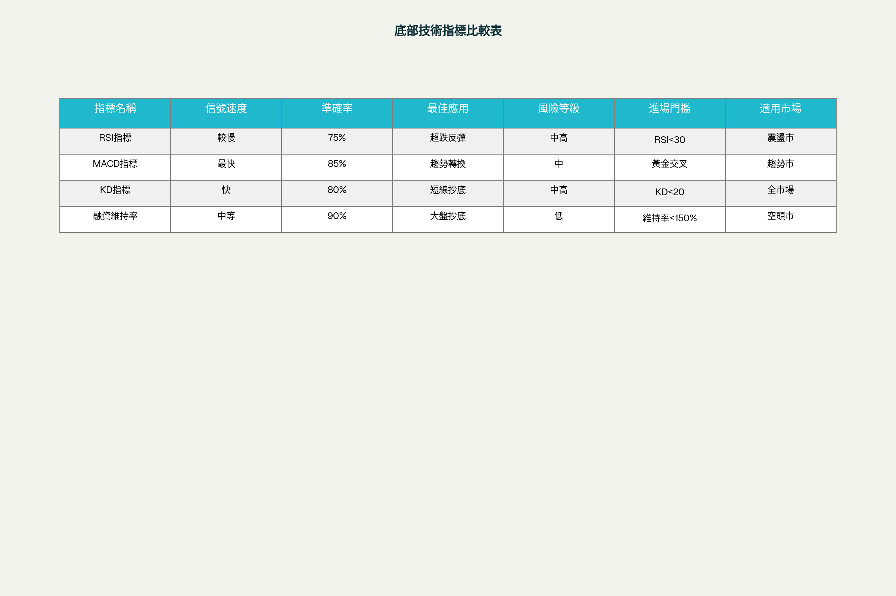

抄底王策略全解析：臺股投資人的逆勢操作完整攻略
抄底王策略是近年來臺股投資圈備受關注的投資策略，特別是在市場震盪加劇的環境下，如何準確把握低點進場時機成為投資人致勝的關鍵。根據市場回測數據顯示，運用適當的抄底策略，24年累積報酬率可高達563%，遠超過一般定期定額的403%。本報告將深入剖析各類抄底王策略的操作機制、技術要點與風險控制，提供投資人實戰操作的完整指南。[^1]
超底王自動化投資策略
策略核心機制
超底王策略是鉅亨買基金平臺開發的自動化逢低加碼投資機制，其核心理念是在定期定額基礎上，當市場跌幅達到預設條件時自動執行加碼扣款。這套系統能有效克服投資人因市場下跌而不敢加碼的心理恐懼，同時幫助沒時間研究市場的投資者提高投資效率。[^2][^3][^4][^1]
觸發機制設計採用前一營業日與過去第10個營業日相比的跌幅作為判斷標準。當跌幅達到第一段設定條件時啟動首次加碼，達到第二段條件時執行更大金額的加碼投入。[^3][^4]

超底王策略各市場最佳設定條件對照表
兩段式加碼策略的回測結果顯示，第一段觸發條件設定在6-8%之間效果最佳，第二段設定為12%時報酬率達到最優水準。以美國科技股為例，設定第一段7%加碼2萬元、第二段12%加碼4萬元的配置，累積報酬率可達1025%。[^3]
市場適用性分析
不同市場對超底王策略的適用性差異顯著。根據30年回測數據，印度股市表現最佳達1632%報酬率，美國科技股次之為1305%，臺灣股市為607%。這顯示超底王策略在高波動且長期上升的市場中特別有效，具備三大特性：高波動性、長期上行趨勢、下跌後快速反彈能力。[^4]
風險控制機制包含30日扣款次數上限設定，避免市場劇烈波動時過度加碼。回測顯示次數上限設為12次是較佳的平衡點，既能充分發揮加碼機制效果，又能避免報酬率遞減現象。[^3]
技術指標抄底策略比較
主流指標效能分析

抄底王策略技術指標比較分析表
RSI指標抄底策略適合捕捉超跌反彈行情，當RSI跌破30時通常顯示股價短期過跌，具備反彈潛力。然而RSI屬於較慢指標，在趨勢市場中容易產生假信號，最適用於震盪市場環境。[^5][^6][^7]
MACD指標被譽為抄底最強指標，特別是觀察MACD柱狀體的收腳與縮頭現象，其反應速度甚至比直接看K線更快。MACD黃金交叉配合日K線突破20日均線，通常是較可靠的抄底信號。[^8][^6]
KD指標在短線抄底操作中表現優異，當KD值跌破20並出現黃金交叉時，往往是短期低點的有效信號。KD指標的優勢在於反應速度快，但在強勢趨勢中容易出現鈍化現象。[^6]
融資維持率抄底指標
融資維持率是臺股特有的強力抄底指標，成功率高達85-90%。歷史經驗顯示，每當臺股大盤融資維持率跌破150%時，往往暗示短線底部浮現。[^9][^10][^11]
歷史低點統計：2008年金融風暴跌至130%、2015年歐債危機135%、2018年貿易戰141%、2020年疫情135%、2022年通膨風暴137%。這些時點後續都出現顯著反彈行情，驗證了融資維持率作為抄底指標的有效性。[^10]
背離現象判斷當大盤指數破新低但融資維持率出現低檔背離時，通常是強烈的底部確認信號。投資人應觀察維持率重新站回140%並能持續站穩，作為臺股大跌後底部確認的重要依據。[^10]
分批抄底策略操作
資金配置原則
分批抄底策略的核心是將總資金分成數份，在不同跌幅區間分批進場，有效分散單一時點進場的風險。建議的進場配置為：第一波跌5-10%投入20%資金、第二波跌10-20%投入30%資金、第三波跌20-30%投入30%資金、第四波跌超過40%投入剩餘20%資金。[^12]
微笑曲線買法是分批抄底的進階版本，假設手上有100萬資金，可分階段佈局優質標的：例如臺積電在848-800元投入20萬、800-750元投入30萬、750-700元投入30萬、700元以下投入剩餘20萬。[^13]
技術面確認要點
成功的分批抄底需要結合技術面確認，避免單純憑感覺猜測低點。支撐位確認是關鍵要素，股價跌到前期平臺整理區或重要均線支撐時，搭配止跌信號出現才是較安全的進場時機。[^14]
底部型態識別包括W底、頭肩底等經典反轉型態，成功率可達80%以上。投資人應等待型態完成並突破頸線確認，而非在型態形成過程中貿然進場。[^15][^14]
風險控制與資金管理
停損機制設計
抄底操作雖然潛在報酬豐厚，但風險控制更為重要。百分比停損法是最簡單有效的方式，建議設定5-10%的固定停損幅度，一旦達到立即出場。不同策略類型的停損設定有所差異：分批抄底建議5-8%、技術指標抄底6-10%、融資維持率抄底3-5%。[^16][^17]
支撐位停損法適合有技術分析基礎的投資人，當股價跌破關鍵支撐位時立即停損出場，避免進一步損失擴大。這種方法需要投資人具備辨識支撐壓力位的能力。[^17][^16]
資金配置管理
抄底策略的資金配置應遵循分散原則，單一標的投資比重不宜超過總資金的20-30%。槓桿控制更為重要，使用融資的投資人在市場大幅波動時應立即降低持股或出場，避免維持率不足被迫斷頭。[^18]
時間成本考量也是關鍵因素，不同抄底策略的預期持有時間差異很大：RSI技術抄底通常1-3週、MACD趨勢抄底1-3個月、分批抄底策略3-6個月、超底王自動加碼則適合1-3年的長期投資。
成功案例與實戰經驗
歷史成功案例分析
臺股歷史上幾次重大抄底機會都有共同特徵：大盤跌幅超過25%、融資維持率跌破140%、國安基金進場護盤。2020年3月疫情底是最成功的抄底案例，當時運用MACD黃金交叉信號進場，後續18個月反彈110%。[^14][^18]
2022年10月政策底展現了支撐位抄底的威力，行情在前期平臺區止跌後大幅反彈35%，持續6個月。這次抄底成功的關鍵在於耐心等待跌到支撐位並出現止跌信號才進場。[^14]
實戰操作要點
消息面與技術面結合是提高抄底成功率的關鍵。消息面應觀察「利多不漲、利空不跌」現象，技術面則要求MACD低檔交叉向上、月KD黃金交叉等信號。[^19][^8]
多重信號確認能顯著提升勝率，建議同時符合2-3個抄底信號再進場，例如2024年4月的大跌同時符合融資維持率降至118%和國安基金進場兩項條件，後續順利反彈25%。[^20]
市場環境適應策略
多空環境區別操作
在多頭回檔環境下，抄底後可以拉長持有時間直到景氣轉折點出現；在空頭格局中，即使融資維持率破低也僅能視為短線抄底機會，不宜長時間續抱。[^9]
大盤趨勢判斷可通過觀察半年線斜率來確定：向上代表多頭趨勢，跌到布林通道下緣時買入；向下則為空頭格局，操作應更加謹慎保守。[^21]
標的選擇原則
抄底標的應優先選擇基本面穩定、具備反彈潛力的優質股票。避開風險股包括財報惡化、連年虧損或過度依賴題材炒作的個股。理想的抄底標的具備「超跌但價值未失」特質，包括龍頭股地位、產業景氣循環谷底時期的優質公司。[^22]
法人持股觀察也是重要參考指標，機構未全面撤出往往意味著市場對其未來仍保有期待。[^22]
結論與投資建議
抄底王策略是高風險高報酬的投資方法，成功的關鍵在於準確判斷市場底部、嚴格執行風險控制、合理配置投資資金。超底王自動化策略適合長期投資者，技術指標抄底適合有一定經驗的投資人，分批抄底則適合風險承受度中等的投資者。
核心建議包括：建立多層次佈局策略避免一次性滿倉、嚴格設定止損與撤退機制、結合盤勢與情境調整策略、選擇適合超跌反彈的優質標的。投資人應根據自身資金狀況、風險偏好和操作經驗，選擇最適合的抄底策略組合。
未來展望方面，隨著市場波動加劇和投資工具不斷創新，抄底策略將更加多元化和智能化。投資人需要持續學習新的技術指標和策略方法，在變化莫測的市場中掌握逆勢操作的藝術，實現穩定獲利的投資目標。